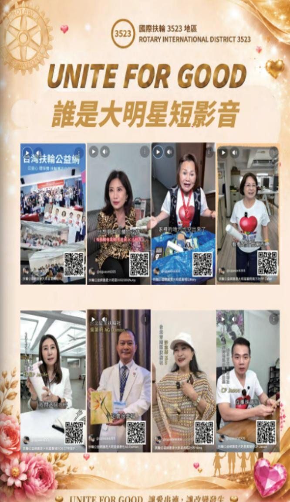

時光飛逝，一年的服務旅程，在2026年6月29日「扶輪公益網2025-26年度成果發表會暨頒獎典禮」圓滿落幕後，也正式畫下句點。此刻的Jason，心中充滿的不是不捨，而是深深的感恩。
當Jason於2025年7月1日接任跨地區扶輪公益網委員會主委時，我就告訴自己：「既然接下這份責任，就要留下價值；既然承擔使命，就要創造改變。」
我一直相信一句話：「敢夢、敢說、敢做。」很多朋友都知道，我常分享一句話，
面對未必最難受，逃避一定躲不過，找力量幫忙很不錯。因為當我們敢於夢想、勇於開口、願意付諸行動，往往會把對的人、對的資源、對的機會就會來到我們身邊，讓原本看似困難的事情，一步步成為現實。
因此，上任之初，我做了四件事情。
第一，我向宇宙借力量。
我勇敢地把我的願景說出來，希望扶輪公益網不只是物資媒合平台，更能成為扶輪人彼此交流、彼此成就、影響社會的重要公益平台。我相信，只要目標夠明確，夢想就有機會實現。
第二，我向總監借力量。
非常感謝DG Jenny對公益網的全力支持，也感謝地區所有扶輪社共同響應年度贊助，讓公益網擁有穩定的經費來源，得以安心推動各項服務計畫，把每一分資源都運用在最需要的地方。
第三，我向顧問借力量。
我要感謝歷屆公益網主委及顧問團，包括PP IT Smooth、PP Life、PP Calier、PP ICT及PDG Tiffany等前輩，一路以來無私分享經驗，建立制度，讓我深深感受到「傳承」才是扶輪最大的力量。
顧問PP Life曾在他任內一次天使座談聊到，如果公益網做不到一千件，為了表了負責，就要Jason去跳淡水河。當時大家都笑了，我可是怕死了,當年度的06月28日，我還去了淡水河看看從哪裡跳下去比較安全!但也正因為有這樣勇於挑戰的精神，最終在他任期最後一天06月30日，真的完成3523地區公益網歷史上第一次突破一千件公益媒合的重要里程碑。這件事也一直提醒著JASON，只要敢設定目標，全力以赴，就有機會創造奇蹟。
第四，我向團隊借力量。
一個人可以走得快，一群人才能走得更遠更愉快。感謝副主委V.P. Vicky、執行長PP AD、副執行長AG Damon，以及所有顧問、工作團隊、志工夥伴，大家彼此合作、互相支持，才能讓每一場活動順利完成。
一年來，我們共舉辦四場天使座談會，參與人數超過300人。透過跨社交流與公益分享，激盪出更多服務的新想法，也讓扶輪公益網凝聚更多向心力。
更令人振奮的是，截至2026年6月30日止，扶輪公益網共完成3,523次公益媒合。這個數字，不僅巧妙呼應3523地區，更象徵3,523次愛心的傳遞、3,523份希望的延續，以及3,523個感動的笑容。這不是冰冷的數字，而是一件件真正改變生命的公益行動。
今年另一項重要突破，是我們首度推出**「扶輪公益網大明星」短影音計畫**，完成八支公益短影音，邀請扶輪夥伴親自分享公益故事，讓更多人透過社群媒體認識扶輪公益網，讓公益服務走進更多人的生活，也讓扶輪精神被更多人看見。
6月29日舉辦的成果發表會暨頒獎典禮，更是Jason任內最感動的一天。我們頒發十二個分區績優獎、扶輪社績優獎、個人績優獎及持續力獎等多項榮譽，看見每一位默默付出的扶輪夥伴站上舞台接受掌聲，我深深感受到，這些榮耀從來不是屬於某一個人，而是屬於所有願意付出的扶輪人。也正因為大家共同努力，3523地區再次在全國扶輪公益網中締造優異成績，這份榮耀屬於每一位扶輪夥伴。
今年還有一個Jason非常欣慰的創新，就是我們首次將AI人工智慧導入成果特刊的製作。從資料整理、數據分析、圖表製作、版面設計，到電子書的呈現，都善用AI工具協助完成，讓整份成果報告更完整、更專業，也更具可讀性。我始終相信，AI不是取代人，而是協助我們把更多時間留給服務，把更多心力留給公益。
因此，我也誠摯邀請所有扶輪先進，掃描成果特刊中的QR Code，閱讀完整電子版成果特刊。特刊中完整收錄年度成果、活動紀錄、績優表揚及各項數據分析，也呈現AI協助完成的成果視覺化內容，讓大家一起見證3523地區扶輪公益網一年來的努力與成果。
回首這一年，CP Jason最大的收穫，不是完成了多少活動，也不是創造了多少數字，而是看見越來越多扶輪社友相信：「公益，真的可以因為我們而改變。」
卸下主委職務，不代表服務的結束，而是另一段傳承的開始。我將持續以一位扶輪人的身分，支持扶輪公益網，也期待新任團隊在既有基礎上持續創新、持續突破，讓更多愛心被串連，讓更多需要幫助的人獲得支持。
最後，我要誠摯感謝DG Jenny、歷屆顧問團、地區扶輪社任長、所有社友、志工夥伴及一路支持扶輪公益網的朋友。因為有大家，我們共同完成了這一年精彩的旅程，也共同寫下3523地區最值得驕傲的一頁。
Jason始終相信，夢想不會因為一個人的卸任而停止，服務也不會因為一年的結束而畫下句點。
未來，我仍將與大家攜手同行，讓扶輪公益網持續成長，讓愛串連，讓改變發生。
UNITE FOR GOOD！
CP Jason 許再森
2025-26年度 國際扶輪3523地區 跨地區扶輪公益網委員會主委

